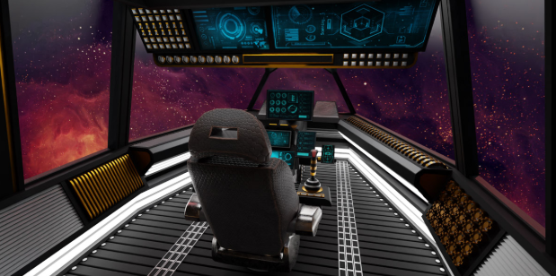
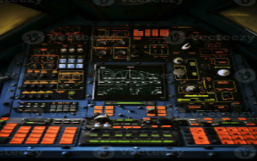

OVERLORD: Do you see the captain’s chair?
Subject 104: I do. Looks high-tech. Super fancy.
OVERLORD: Yeah well thank the United States government. This is tech never seen in any other craft on Earth. Diagnostic tables that map fuel productivity and dilution to allow the perfect amount of fuel usage. Quantum computing refined to the point of predicting a flight path from the moment it takes off to its final destination. Well… at least it did.
Subject 104: Till you had to rely on the squirrel.
OVERLORD: God rest our souls.
OVERLORD: Get into the captain’s seat. I’m promoting you to first-class captain and five-star admiral of space activities.
Subject 104: It’s quite a comfy chair.
Subject 104: *Chitter*
OVERLORD: Alright, don’t get too comfy. Captain Squirrely’s job is not over. Get on the command board and tell me what you see.
Subject 104: Hmmm… the board is too far away. This station was not built for rodents.
OVERLORD: Oh! Press the button on the side of the chair.
Subject 104: High-tech! The board just moved up to my stomach!
OVERLORD: All heights accommodated for, this ship is for all people… and animals.

Subject 104: What’s that button flashing?
OVERLORD: That’s the warning light. It’s not a button so don’t press it. Hell, don’t press ANYTHING until I tell you. Capiche?
Subject 104: Sure. They all look so shiny though…
OVERLORD: Swear to God… I will fly out there a billion kilometers just to smack you if anything gets touched.
Subject 104: I might be saved then!
OVERLORD: Do you see the small joystick on the right side of the board?
Subject 104: I do.
OVERLORD: Next to it should be a button called ‘Traj. Lock’. That’s the trajectory lock for the thrusters. I need you to press it to unlock it from its flight course.
BEEEEEEEEEEP
OVERLORD: Great! Mr. Captain! The ship is now flying in the last direction the thrusters pointed towards! That’s good. We now need to readjust the ship so when the autopilot returns, it’ll choose an asteroid-free trajectory.
Subject 104: Yawn. Being a captain is so boring. I thought I would fly the ship everywhere.
OVERLORD: Now, next to the flashing light there should be another button. Green. Press it.
Subject 104: You got me climbing over buttons.
OVERLORD: Touch any others and you’re dead. We’re all dead.
Subject 104: Jeez. Calm down. I may be a rodent but I’m one of the smart ones.
BEEEEEEEEEEP
OVERLORD: Yes! Now we’re cooking with gas. The thrusters are now free to move with human-i mean-squirrel input.
Subject 104: So move the joystick? Should I fly it manually now?
OVERLORD: No! Not too hard. This next part will be the most challenging. Do you see the other joystick on the opposite side of the board? Both of these sticks are the thruster controls. They move independently to allow for advanced movements in space. You will maneuver both sticks to turn the ship starboard-side.
Subject 104: Uh… there’s quite a few buttons between them. You want me to avoid hitting those? AND move the sticks?
OVERLORD: You will be the bravest and honored squirrel in all of human existence. They will make a bronze statue of you in Central Park for this.
Subject 104: Alright… here I go.
Subject 104: …
Subject 104: I’m usually agile but I think the sleep ruffled me. This feels like a damn funny stretch. Ow. Ow. Ow. Ow!
OVERLORD: You’re almost there! I can sense the left thruster moving. You just need to move your leg and push the second joystick. Go! Go! Go!
THRUSTERS VEERING THIRTY DEGREES STARBOARD.
OVERLORD: You’re doing it! You mad lad!
Subject 104: My thigh! My thigh! Fuck!
BEEEEEEEEEEP
BEEEEEEEEEEP
Subject 104: Oh shit.
GRAVITATION DRIVE DEACTIVATING. POWER-SAVING MODE ACTIVATING. ENTERING NOSE SPIN.
Continue →